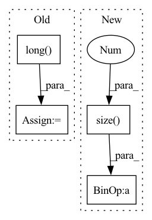

Pattern ID :39904
Before Change
offset_y = type(self).offset_y(Y.size())
harmonic_smoothing = type(self).harmonic_smoothing(X.size(0)).view([-1,1,1])
variances = (1/harmonic_smoothing) * X.size(1)
filter_sizes = (variances*2+1).long()
dX = torch.empty_like(X)
dY = torch.empty_like(Y)
for n in range(X.size(0)):
sigma, filter_size = variances[n].item(), filter_sizes[n].item()After Change
offset_x = type(self).offset_x(X.size())
offset_y = type(self).offset_y(Y.size())
harmonic_smoothing = type(self).harmonic_smoothing(X.size(0)).view([-1,1,1])
x_variances = (1/harmonic_smoothing) * X.size(2) / 2
y_variances = (1/harmonic_smoothing) * X.size(1) / 2
x_filter_sizes = (x_variances.ceil().long() * 2 + 1)
y_filter_sizes = (y_variances.ceil().long() * 2 + 1)In pattern: SUPERPATTERN
Frequency: 3
Non-data size: 4
Instances Fragment ID: 113409872
Project Name: anguelos/tormentor
Commit Name: 8ab4428988cdc409e9e8688889ffbc004286616f
Time: 2020-07-14
Author: anguelos.nicolaou@gmail.com
File Name: tormentor/spatial_augmentations.py
M Class Name: ElasticTransform
N Class Name: ElasticTransform
M Method Name: generate_batch_state(2)
N Method Name: generate_batch_state(2)
M Parent Class: SpatialImageAugmentation
N Parent Class: SpatialImageAugmentation
M File Name: tormentor/spatial_augmentations.py
N File Name: tormentor/spatial_augmentations.py
M Start Line: 183
M End Line: 194
N Start Line: 250
N End Line: 271
Before Change
def forward(self, clean_waveform, clean_len):
// Reading input list
clean_length = (clean_len * clean_waveform.size(-1)).long()
batch_size = clean_waveform.size(0)
dropped_waveform = clean_waveform.clone()
// Don"t drop (return early) 1-`drop_prob` portion of the batchesAfter Change
`[batch, channels, time_steps]`
// Reading input list
lengths = (lengths * waveforms.size(-1 ) ).long()
batch_size = waveforms.size(0)
dropped_waveform = waveforms.clone()
Fragment ID: 113409866
Project Name: speechbrain/speechbrain
Commit Name: 84dc71648827262f8e75cd4744ae87cedbbfc294
Time: 2020-04-03
Author: plantinga.peter@gmail.com
File Name: speechbrain/processing/speech_augmentation.py
M Class Name: DropChunk
N Class Name: DropChunk
M Method Name: forward(3)
N Method Name: forward(3)
M Parent Class: torch.nn.Module
N Parent Class: torch.nn.Module
M File Name: speechbrain/processing/speech_augmentation.py
N File Name: speechbrain/processing/speech_augmentation.py
M Start Line: 988
M End Line: 1037
N Start Line: 988
N End Line: 990
Before Change
// world_size * (2C + 1) -> world_size * C, world_size * C, world_size * 1
mean_all, invstd_all, count_all = torch.split(combined, num_channels, dim=1)
size = count_all.view(-1).long() .sum()
if size == 1:
raise ValueError("Expected more than 1 value per channel when training, got input size {}".format(size))
After Change
input = input.contiguous()
weight = weight.contiguous()
size = int(input.numel() // input.size(1 ) )
if size == 1 and world_size < 2:
raise ValueError("Expected more than 1 value per channel when training, got input size {}".format(size))
Fragment ID: 113409864
Project Name: pytorch/pytorch
Commit Name: d30f4d1dfd5237d89834363ce2cff9de4ee92811
Time: 2021-03-03
Author: 24860335+xwang233@users.noreply.github.com
File Name: torch/nn/modules/_functions.py
M Class Name: SyncBatchNorm
N Class Name: SyncBatchNorm
M Method Name: forward(10)
N Method Name: forward(10)
M Parent Class: Function
N Parent Class: Function
M File Name: torch/nn/modules/_functions.py
N File Name: torch/nn/modules/_functions.py
M Start Line: 10
M End Line: 49
N Start Line: 10
N End Line: 51